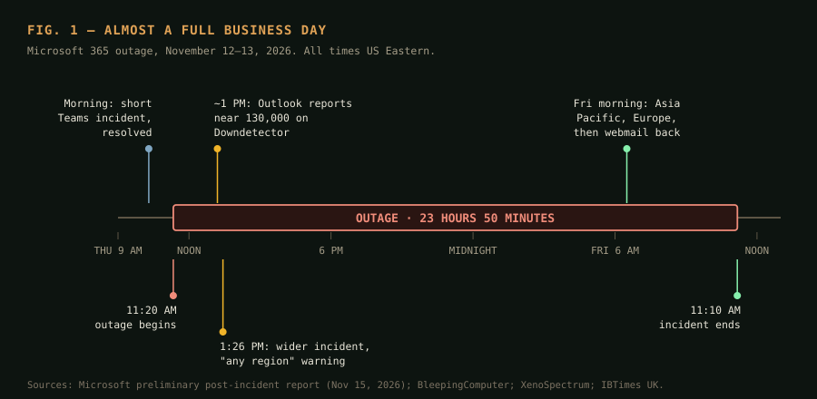
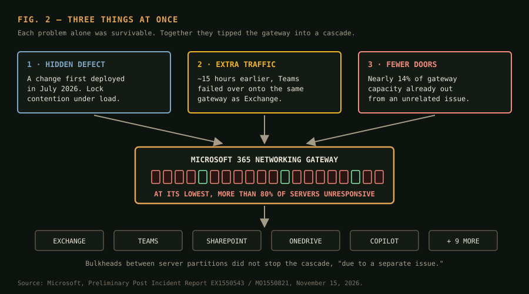

Savvy Security LLC · Analysis
The Front Door Fell Over
On November 12, Microsoft 365 went down for almost a full day. There was no attacker and no single big mistake. Three ordinary problems hit the same front door on the same afternoon.
The short version
From 11:20 AM Eastern on Thursday, November 12, until 11:10 AM Eastern the next day, people around the world could not reliably reach their work email. Teams, SharePoint, OneDrive, Copilot and a dozen other Microsoft 365 services stumbled with it. Microsoft’s own preliminary report puts the clock at 23 hours and 50 minutes.
The cause was not a hack. A months-old software defect, a surge of rerouted traffic and a pool of servers already out of action all landed on the same piece of equipment: the networking gateway that sits in front of Microsoft 365. At the worst point, more than 80% of those gateway servers had stopped answering.
You cannot fix Microsoft. You can decide today what your business does the next time the front door falls over. That part is at the end, and it costs almost nothing.
1 · What happened
The trouble showed up first as a short Teams problem that Thursday morning. Microsoft logged it as its own incident and marked it resolved (BleepingComputer, 2026). Then, shortly after 11 AM Eastern, people in the Americas started losing their mailboxes. Microsoft opened incident EX1550543 and posted that it was investigating “issues accessing Exchange Online mailboxes through multiple connection methods in the Americas” (IBTimes UK, 2026).
It did not stay in the Americas. By early afternoon Microsoft had opened a second, wider incident, MO1550821, and warned that users in any region could be affected. Outlook complaints on Downdetector climbed to nearly 130,000 around 1 PM Eastern (IBTimes UK, 2026; WindowsForum, 2026). Those are people pressing a “report a problem” button, not a count of everyone hit, but the curve tells you how fast it spread.
Email took the worst of it. Most people could not open their mailboxes in Outlook or other mail apps, and incoming mail was delayed. Teams chat and meetings mostly kept working, but Teams features that lean on Exchange, like calendars and scheduling, did not (XenoSpectrum, 2026). Microsoft’s preliminary report lists the services impacted as Exchange, Copilot, Teams, SharePoint, OneDrive, Defender, Purview, Fabric, Intune, Planner, Power Apps, To Do, Power BI and Universal Print (Microsoft, 2026a).
Recovery came in waves. Asia Pacific came back first, then Europe, with webmail back to normal worldwide on Friday morning and the incident closed at 4:10 PM UTC, 11:10 AM Eastern (Microsoft, 2026a; Office Watch, 2026).

No, and Microsoft said so early. Charles Lamanna, a Microsoft executive vice president, posted that there was “no indication this is the result of malicious or cyber activity” (Office 365 for IT Pros, 2026). In a statement to BleepingComputer on November 13, Microsoft called it “a technical issue not related to cyber or AI / agents” (BleepingComputer, 2026).
That matters for what you do during the next one. An outage is not a breach, and it is not a reason to start changing passwords or ripping out settings in a panic. It is a great time for criminals to send fake “your mailbox needs to be re-verified” emails. Treat any message that arrives during an outage asking you to sign in again with extra suspicion.
2 · Three things at once
On November 15, Microsoft issued a preliminary post-incident report to its customers. It is the kind of document admins get in their Microsoft 365 admin center, and copies of it have been published and quoted by several outlets that follow Microsoft closely (Microsoft, 2026a; Office 365 for IT Pros, 2026; Office Watch, 2026). It describes three separate problems that, on their own, would probably have been survivable.

- A hidden defect. A change that “first started deployment in July of this year” left a flaw that made the gateway servers “become overwhelmed and unresponsive under certain load conditions.” The flaw was lock contention inside an internal Windows process: work piling up while waiting its turn, until the machine ran out of processor and memory.
- Extra traffic. “Approximately fifteen hours before the outage,” Teams failed over from an alternative networking gateway to the primary gateway, the same one that serves Exchange Online. One front door suddenly had two crowds.
- Fewer doors open. “Nearly 14% of server capacity for the networking gateway was out of service due to an unrelated issue.”
Put those together and the gateway hit the “certain load conditions” that set off the defect. Servers locked up. Their traffic moved to the servers still standing, which then locked up too. Microsoft’s own words for the low point: “At its lowest, more than 80% of servers were unresponsive” (Microsoft, 2026a). Wccftech’s reading of the same report is that this happened within about two hours (Wccftech, 2026).
About the “Windows bug” headlines. Several outlets summed this up as a months-old Windows bug. That is true but easy to misread. Microsoft’s report says the defect came from a fix made specifically for its Microsoft 365 networking gateway servers, and that “neither the underlying defect nor the fix applies to broader Windows deployments.” Your office PCs and your Windows servers were not carrying this bug.
Nothing broke all at once. Three small things broke at the same time, in the same place.
3 · Why the walls did not hold
Big cloud systems are built in compartments. Engineers call them bulkheads, after the walls inside a ship that keep one flooded section from sinking the whole hull. The idea is simple: if one partition of servers falls over, the damage stays in that partition.
That is not what happened. Microsoft’s report says that “due to a separate issue, the normal bulkheads between these different partitions did not stop the cascading failure” (Microsoft, 2026a). The preliminary report does not say what that separate issue was. As Office Watch pointed out, Microsoft has not explained it yet (Office Watch, 2026). That is the most important open question in this whole incident, and the final report is due on November 20.
Google’s Site Reliability Engineering book has a one-line definition of what Microsoft fought for a day: “A cascading failure is a failure that grows over time as a result of positive feedback” (Ulrich, 2016). Positive feedback here means the failure feeds itself. Every server that drops out hands its load to the ones left, which makes them more likely to drop out next.
Cascades are also hard to stop because the obvious fix makes them worse. When servers come back, every phone, laptop and app that has been retrying for hours tries to reconnect at the same moment. Engineers call that a thundering herd, and it can knock a recovering system straight back down. That is why recoveries like this one move region by region instead of flipping a switch.
4 · The pattern
If this feels familiar, it should. The giant providers that run most of the internet are very reliable most of the time. When they fail, they take thousands of businesses down with them, and it keeps happening:
| When | Who | What the provider says happened |
|---|---|---|
| July 2024 | CrowdStrike / Windows | A faulty security software update crashed an estimated 8.5 million Windows devices, “less than one percent of all Windows machines” (Weston, 2024). |
| Oct 19–20, 2025 | Amazon Web Services | A latent race condition in DynamoDB’s automated DNS management left an empty DNS record in the Northern Virginia region. About 14½ hours end to end (AWS, 2025). |
| Nov 18, 2025 | Cloudflare | Triggered by “a bug in generation logic for a Bot Management feature file” (Cloudflare, 2025). One year ago this week. |
| Nov 12–13, 2026 | Microsoft 365 | A latent gateway defect, a traffic surge and missing capacity, as above. 23 hours 50 minutes (Microsoft, 2026a). |
| Nov 15, 2026 | Amazon Web Services | Connectivity problems in Northern Virginia hit 11 services for a few hours that Sunday morning. AWS had not published a root cause at the time of reporting (GBHackers, 2026). |
Recent large outages and the provider’s own explanation where one exists.
Look at the middle column. “Latent.” A race condition that sat quiet until the timing was wrong. A defect that rode along from July to November. A file that was fine until it got bigger. These are not careless companies. They are systems so large that rare combinations of events stop being rare.
I wrote about this idea from a very different angle in Fires and Failure Domains: a system survives when a failure in one part cannot take the rest with it. The cloud giants know this better than anyone. On November 12, the separation failed anyway. For a small business, the lesson is that the provider’s walls are not your walls. You need a few of your own.
5 · Your one-page outage plan
Moving off Microsoft, Google or AWS is not the answer for most small businesses. Every provider has bad days, and doing it all yourself would be less reliable, not more. The answer is to decide ahead of time what you do when your provider has a bad day. Write these down on one page and print it, because the next outage may take your shared drive with it.
- Know what you depend on. List who runs your email, your domain and DNS, your website, your files, your phones, your card payments and your scheduling. Many small businesses find that one provider holds four or five of those. That is fine, as long as you know it. The commands in the next section show how to check.
- Have a second way to talk. If your team lives in Teams and Outlook, agree now on the backup: a group text, a phone tree, or a chat app on a different provider. Keep a printed list of staff and key customer phone numbers. You do not want to discover during an outage that every contact you have is stored in the thing that is down.
- Keep working copies on your own devices. Files you need every day should be synced to the computer, not only in the browser. Mail apps that keep a local copy let you read and search what already arrived even when the server is unreachable.
- Don’t panic about lost email. Delayed is not lost. The internet email standard tells sending servers to queue a message they cannot deliver and keep retrying for days before giving up (Klensin, 2008). Microsoft also extended its own delivery window during this outage so delayed messages were not bounced back (Microsoft, 2026a).
- Know where the real news is. Bookmark your provider’s official status page and its official status account on social media. For Microsoft 365, admins get the details, including incident numbers like EX1550543, under Health > Service health in the admin center. Rumor moves faster than status pages; status pages are right more often.
- Treat outage emails as suspect. No real provider fixes an outage by asking you to click a link and sign in again. Tell your staff that before it happens.
- Check your service credits. Business cloud plans usually come with an uptime promise and credits when it is broken, but you normally have to ask. Office 365 for IT Pros worked out that this one outage dropped November uptime to about 96.7% for affected tenants, well under Microsoft’s usual target, and noted credits have to be claimed (Office 365 for IT Pros, 2026). Check your own plan terms.
- Practice once. Pick a slow afternoon and pretend email is down for four hours. Who calls whom? How do you take an order? Ten minutes of talking it through beats a day of improvising.
For the technical: two small tools
Find out who you depend on
These three commands show who runs your email, your DNS and the front of your website. They work on Linux and macOS. On a Chromebook, they run in the Linux (Crostini) terminal; install the tools first with sudo apt install dnsutils curl. Replace example.com with your own domain.
# Who handles your email? dig +short MX example.com 0 example-com.mail.protection.outlook.com. ← that is Microsoft 365 # Who answers for your domain name? dig +short NS example.com # Who sits in front of your website? curl -sI https://example.com | grep -iE '^(server|via|cf-ray|x-amz-cf-id|x-cache)' # "server: cloudflare" or a cf-ray header means Cloudflare. # x-amz-cf-id means Amazon CloudFront.
If the same company name comes back three times, that company is a single point of failure for you. Write it on your one-page plan.
If you write software: don’t be part of the herd
If your app talks to a cloud service, how it retries matters during an outage. Retrying instantly, forever, from every copy of your app at once is how a thundering herd forms. The standard fix is exponential backoff with jitter. As Marc Brooker of AWS puts it, “Jitter adds some amount of randomness to the backoff to spread the retries around in time” (Brooker, 2019). A minimal version in Python:
import random, time def call_with_backoff(do_request, max_tries=6, base=1.0, cap=60.0): """Retry a flaky call without stampeding a recovering service.""" for attempt in range(max_tries): try: return do_request() except Exception: if attempt == max_tries - 1: raise # give up and tell a human ceiling = min(cap, base * 2 ** attempt) # 1, 2, 4, 8... seconds, capped time.sleep(random.uniform(0, ceiling)) # "full jitter": a random wait
Each retry waits a random time up to a growing ceiling, so a thousand clients do not all knock on the same door at the same second.
What is still open
I try to separate what is known from what is not, so here it is.
| Claim | Status | What backs it |
|---|---|---|
| It was a cyberattack | False | Microsoft said there was no indication of malicious activity and called it a technical issue (Office 365 for IT Pros, 2026; BleepingComputer, 2026). |
| Three factors combined to cause it | Microsoft’s account | Microsoft’s preliminary post-incident report, November 15 (Microsoft, 2026a). |
| A Windows bug put ordinary Windows machines at risk | False | The defect applied only to Microsoft 365 gateway servers, per the same report. |
| Why the bulkheads failed | Unknown | The report names only “a separate issue.” The final report is due November 20, 2026. |
| Outages like this will keep happening | My bet | The pattern above points that way. Scale makes rare combinations common. No study proves it for any one provider. |
Microsoft says it has already rolled the faulty connection-handling code back to its previous known good state, added capacity, added monitoring for traffic-redirection patterns, and put guardrails on how traffic is spread so one surge cannot cascade the same way. A fuller list of fixes is promised in the final report (Microsoft, 2026a). I will update this post when it lands.
You can’t keep the cloud from falling over. You can decide today what you do when it does.
From the book
More on incidents that changed how we build and defend systems in A Hacker’s Guide to Survive by Malcolm R. Smith.
📖 Get A Hacker’s Guide to Survive on Amazon →
Or read Chapter 1 free first.
Sources
The November 12–13 Microsoft 365 outage (checked November 18, 2026)
- Microsoft (2026a). “Preliminary Post Incident Report for Microsoft 365: EX1550543 / MO1550821.” November 15, 2026. Issued to customers in the Microsoft 365 admin center; copy published by 365Fanatic. 365fanatic.com (PDF). Summary: 365fanatic.com.
- Microsoft (2026b). Microsoft 365 Status, public service status page. status.cloud.microsoft.
- Redmond, Tony. “The Great Exchange Online Outage of November 2026.” Office 365 for IT Pros, November 16, 2026. office365itpros.com.
- “Microsoft 365 outage: what went wrong, in plain English.” Office Watch, November 2026. office-watch.com.
- “Massive Microsoft 365 outage disrupts Outlook, Teams, Copilot worldwide.” BleepingComputer, November 12–13, 2026. bleepingcomputer.com.
- “Office Workers Cut Off From Email and Chat as Microsoft Teams Falters Twice and Outlook Goes Dark for Hours.” IBTimes UK, November 13, 2026. ibtimes.co.uk.
- “Microsoft Reveals Root Cause Of Massive Microsoft 365 Outage.” Wccftech, November 16, 2026. wccftech.com.
- Coverage of the Microsoft 365 outage, Exchange dependency and server capacity (English edition). XenoSpectrum, November 13, 2026. xenospectrum.com.
- Exchange Online incident EX1550543 megathread. WindowsForum, November 12–16, 2026. windowsforum.com.
Earlier outages
- Weston, David (2024). “Helping our customers through the CrowdStrike outage.” Microsoft, July 20, 2024. blogs.microsoft.com.
- Amazon Web Services (2025). “Summary of the Amazon DynamoDB Service Disruption in the Northern Virginia (US-EAST-1) Region.” October 2025. aws.amazon.com.
- Cloudflare (2025). “Cloudflare outage on November 18, 2025.” blog.cloudflare.com.
- “AWS Confirms Major US-EAST-1 Outage Disrupted 11 Cloud Services Before Full Recovery.” GBHackers, November 16, 2026. gbhackers.com. Official updates: AWS Health Dashboard.
Engineering and standards
- Ulrich, Mike (2016). “Addressing Cascading Failures.” Chapter 22 in Beyer, Jones, Petoff and Murphy (eds.), Site Reliability Engineering: How Google Runs Production Systems. O’Reilly. sre.google.
- Brooker, Marc (2019). “Timeouts, retries, and backoff with jitter.” Amazon Builders’ Library. builder.aws.com.
- Klensin, J. (2008). “Simple Mail Transfer Protocol.” RFC 5321, Internet Engineering Task Force, section 4.5.4, “Retry Strategies.” rfc-editor.org.
Malcolm R. Smith writes on security architecture, threat modeling, and autonomous defense for Savvy Security LLC. He builds software as a prompt engineer on a used Chromebook, and is the author of A Hacker’s Guide to Survive.